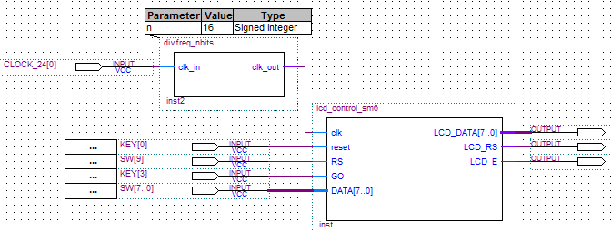

Multiplexeur 4I, affectation Conditionnelle
Multiplexeur 4I, Affectation Conditionnelle, Entrée type vecteur
Multiplexeur 4I, affectation Sélective
Multiplexeur 4I, Affectation Sélective, Entrée type vecteur
Multiplexeur 4I, Process, Case-When
Multiplexeur 4I, Process, if-then
Multiplexeur 4 x 2I, Affectation Conditionnelle
Multiplexeur 4 x 2I, affectation sélective
Multiplexeur 4 x 2I, Process Case/When
Multiplexeur 4 x 2I, Process If/Then
DéMultiplexeur, affectation Conditionnelle
DéMultiplexeur, Process, Case-When
Décodeur/Démultiplexeur paramétrable
Décodeur bcd-7segments Anode Commune
Comparateur 2 x 4 bits, Process, if-then
Comparateur 2 x N, Affectation Conditionnelle
Additionneur Unsigned 4bits => Unsigned 4 bits
Additionneur Unsigned n bits => Unsigned n bits
Additionneur Signed 4bit => Signed 4bits
Additionneur Signed n bit => Signed n bits
Additionneur Signed 4bit => Signed 5 bits
Additionneur Signed n bit => Signed n+1 bits
Valeur Absolue
Décodeur binaire 4 bits vers bcd 2 digits
Décodeur binaire (4, 5 ou 6 bits) vers bcd 2 digits
Décodeur binaire (4 à 9 bits) vers bcd 3 digits
Décodeur binaire (4 à 13 bits) vers bcd 4 digits
Registre à décalage
Registre à décalage, Chargement parallèle Asynchrone
Registre à décalage, Chargement parallèle Synchrone
Compteur N bits
Compteur N bits Universel
Compteur modulo 10
Diviseur de fréquence n bits (2^n)
Diviseur de fréquence par 2xN
Driver LCD

Bibliothèque VHDL
Multiplexeur 4I, Affectation conditionnelle
-- Multiplexeur 4=>1, Affectation conditionnelle
library IEEE;
use IEEE.STD_LOGIC_1164.all;
entity mux_4to1_V3 is
port(
E0,E1,E2,E3,A0,A1 : in std_logic;
S: out std_logic
);
end mux_4to1_V3;
architecture archi of mux_4to1_V3 is
signal A : std_logic_vector(1 downto 0) := (A1,A0);
begin
S <=
E0 when A = "00" else
E1 when A = "01" else
E2 when A = "10" else
E3 when A = "11" else
'0';
end archi;
Multiplexeur 4I, Affectation Conditionnelle, Entrée type
vecteur
-- Multiplexeur 4=>1, Affectation Conditionnelle
-- Entées de type vecteur
library IEEE;
use IEEE.STD_LOGIC_1164.all;
entity mux_4to1_aff_cond is
port(
E : in std_logic_vector(3 downto 0);
S: in std_logic_vector(1 downto 0);
Z: out std_logic
);
end mux_4to1_aff_cond;
architecture archi of mux_4to1_aff_cond is
begin
Z <=
E(0) when S = "00" else
E(1) when S = "01" else
E(2) when S = "10" else
E(3) when S = "11" else
'0';
end archi;
Multiplexeur 4I, affectation Sélective
-- Affectation Sélective bis
library IEEE;
use IEEE.STD_LOGIC_1164.all;
entity mux_4to1_V4 is
port(
E0,E1,E2,E3,A0,A1 : in std_logic;
S: out std_logic
);
end mux_4to1_V4;
architecture archi of mux_4to1_V4 is
begin
with std_logic_vector'(A1,A0) select
S <= E0 when "00",
E1 when "01",
E2 when "10",
E3 when "11",
'0' when others;
end archi;
Multiplexeur 4I, Affectation Sélective, Entrée type
vecteur
-- Multiplexeur, Affectation Sélective
library IEEE;
use IEEE.STD_LOGIC_1164.all;
entity mux_4to1_aff_cond is
port(
E : in std_logic_vector(3 downto 0);
S: in std_logic_vector(1 downto 0);
Z: out std_logic
);
end mux_4to1_aff_cond;
architecture archi of mux_4to1_aff_cond is
begin
with S select
Z <= E(0) when "00",
E(1) when "01",
E(2) when "10",
E(3) when "11",
'0' when others;
end archi;
Multiplexeur 4I, Process, Case-When
library IEEE;
use IEEE.STD_LOGIC_1164.all;
entity mux_4to1_P_case is
port(
E : in std_logic_vector(3 downto 0);
S: in std_logic_vector(1 downto 0);
Z: out std_logic
);
end mux_4to1_P_case;
architecture bhv of mux_4to1_P_case is
begin
process (E,S) is
begin
case S is
when "00" => Z <= E(0);
when "01" => Z <= E(1);
when "10" => Z <= E(2);
when "11" => Z <= E(3);
end case;
end process;
end bhv;
Multiplexeur 4I, Process, if-then
library IEEE;
use IEEE.STD_LOGIC_1164.all;
entity mux_4to1 is
port(
A,B,C,D : in STD_LOGIC;
S0,S1: in STD_LOGIC;
Z: out STD_LOGIC
);
end mux_4to1;
architecture bhv of mux_4to1 is
begin
process (A,B,C,D,S0,S1) is
begin
if (S0 ='0' and S1 = '0') then
Z <= A;
elsif (S0 ='1' and S1 = '0') then
Z <= B;
elsif (S0 ='0' and S1 = '1') then
Z <= C;
else
Z <= D;
end if;
end process;
end bhv;
Multiplexeur 4 x 2I, Affectation Conditionnelle
-- Quad 2-input multiplexer (74157)
-- Méthode 1: Affectation conditionnelle
library IEEE;
use IEEE.STD_LOGIC_1164.all;
entity quad2imux_v1 is
port(
A: in std_logic_vector(3 downto 0);
B: in std_logic_vector(3 downto 0);
E: in std_logic;
S: in std_logic;
Y: out std_logic_vector(3 downto 0)
);
end quad2imux_v1;
architecture archi of quad2imux_v1 is
signal X : std_logic_vector(1 downto 0) := (E,S);
begin
Y <= A when X = "00" else B when X = "01" else "0000";
end archi;
Multiplexeur 4 x 2I, affectation sélective
-- Quad 2-input multiplexer (74157)
-- Méthode 2: Affectation Sélective
library IEEE;
use IEEE.STD_LOGIC_1164.all;
entity quad2imux_v2 is
port(
A: in std_logic_vector(3 downto 0);
B: in std_logic_vector(3 downto 0);
E: in std_logic;
S: in std_logic;
Y: out std_logic_vector(3 downto 0)
);
end quad2imux_v2;
architecture archi of quad2imux_v2 is
signal X: std_logic_vector(1 downto 0) := (E,S);
begin
with X select
Y <= A when "00",
B when "01",
"0000" when OTHERS;
end archi;
Multiplexeur 4 x 2I, Process Case/When
-- Quad 2-input multiplexer (74157)
-- Méthode 3: Process Case/When
-- Case/When ne peut pas être utilisé hors process
library IEEE;
use IEEE.STD_LOGIC_1164.all;
entity quad2imux_v3 is
port(
A: in std_logic_vector(3 downto 0);
B: in std_logic_vector(3 downto 0);
E: in std_logic;
S: in std_logic;
Y: out std_logic_vector(3 downto 0)
);
end quad2imux_v3;
architecture archi of quad2imux_v3 is
signal X : std_logic_vector(1 downto 0) := (E,S); --Agrecation
begin
process (E,S) is
begin
case X is
when "00" => Y <= A;
when "01" => Y <= B;
when OTHERS => Y <= "0000";
end case;
end process;
end archi;
Multiplexeur 4 x 2I, Process If/Then
-- Quad 2-input multiplexer (74157)
-- Méthode 4: Process if/then
-- if/Then ne peut pas être utilisé hors process
library IEEE;
use IEEE.STD_LOGIC_1164.all;
entity quad2imux_v4 is
port(
A: in std_logic_vector(3 downto 0);
B: in std_logic_vector(3 downto 0);
E: in std_logic;
S: in std_logic;
Y: out std_logic_vector(3 downto 0)
);
end quad2imux_v4;
architecture archi of quad2imux_v4 is
signal X : std_logic_vector(1 downto 0) := (E,S); --Agrecation
begin
process (E,S) is
begin
if (X = "00")then
Y <= A;
elsif (X = "01")then
Y <= B;
else
Y <= "0000";
end if;
end process;
end archi;
DéMultiplexeur, affectation Conditionnelle
-- Démultiplexeur: Affectation Conditionnelle
library IEEE;
use IEEE.STD_LOGIC_1164.all;
entity dmuxV2_1to4_AC is
port(
E : in std_logic;
A : in std_logic_vector(1 downto 0);
S : out std_logic_vector(3 downto 0)
);
end dmuxV2_1to4_AC;
architecture archi of dmuxV2_1to4_AC is
begin
S(0) <= E when A = "00" else '1';
S(1) <= E when A = "01" else '1';
S(2) <= E when A = "10" else '1';
S(3) <= E when A = "11" else '1';
end archi;
DéMultiplexeur, Process, Case-When
-- Démultiplexeur: Process case-when
library IEEE;
use IEEE.STD_LOGIC_1164.all;
entity dmuxV2_1to4_Pss is
port(
E : in std_logic;
A : in std_logic_vector(1 downto 0);
S : out std_logic_vector(3 downto 0)
);
end dmuxV2_1to4_Pss;
architecture archi of dmuxV2_1to4_Pss is
begin
process (E,A) is
begin
S <= "1111";
case A is
when "00" => S(0) <= E;
when "01" => S(1) <= E;
when "10" => S(2) <= E;
when "11" => S(3) <= E;
end case;
end process;
end archi;
Décodeur/Démultiplexeur paramétrable
-- Décodeur/Démultiplexeur avec Généricité
-- Sortie sélectionnée=Entrée, Les autres dépendent du paramètre:
-- paramètre = '0' => sorties non sélectionnée = 0
-- paramètre = '1' => sorties non sélectionnée = 1
library IEEE;
use IEEE.STD_LOGIC_1164.all;
entity dmuxG_1to4_AC is
generic ( DO : std_logic := '1' );
port(
E : in std_logic;
S : out std_logic_vector(3 downto 0);
A : in std_logic_vector(1 downto 0)
);
end dmuxG_1to4_AC;
architecture archi of dmuxG_1to4_AC is
begin
S(0) <= E when A = "00" else DO;
S(1) <= E when A = "01" else DO;
S(2) <= E when A = "10" else DO;
S(3) <= E when A = "11" else DO;
end archi;
Décodeur bcd-7segments Anode Commune
library ieee;
use ieee.std_logic_1164.all;
entity bcd7seg_ac is
port ( BCD : in STD_LOGIC_VECTOR (3 downto 0);
SEG : out STD_LOGIC_VECTOR (6 downto 0) );
end bcd7seg_AC;
architecture ARCH_DEC of bcd7seg_ac is
begin
SEG <= "1000000" when BCD="0000" else
"1111001" when BCD="0001" else
"0100100" when BCD="0010" else
"0110000" when BCD="0011" else
"0011001" when BCD="0100" else
"0010010" when BCD="0101" else
"0000010" when BCD="0110" else
"1111000" when BCD="0111" else
"0000000" when BCD="1000" else
"0010000" when BCD="1001" else
"0001000" when BCD="1010" else
"0000011" when BCD="1011" else
"1000110" when BCD="1100" else
"0100001" when BCD="1101" else
"0000110" when BCD="1110" else
"0001110" when BCD="1111" else
"1111111" ;
end ARCH_DEC ;
Comparateur 2 x 4 bits, Process, if-then
--Comparateur 2 x 4 bits
library IEEE;
use IEEE.STD_LOGIC_1164.all;
entity cmprtr4b is
port( A,B : in std_logic_vector(3 downto 0);
EQU,SUP,INF : out std_logic );
end cmprtr4b;
architecture archi of cmprtr4b is
begin
process (A, B) is
begin
if (A = B) Then
EQU <= '1';
SUP <= '0';
INF <= '0';
elsif A > B then
EQU <= '0';
SUP <= '1';
INF <= '0';
else
EQU <= '0';
SUP <= '0';
INF <= '1';
end if;
end process;
end archi;
Comparateur 2 x N, Affectation Conditionnelle
--Comparateur 2 x N (Généricité)
library IEEE;
use IEEE.STD_LOGIC_1164.all;
entity cmprtrG is
generic(n : natural := 4 );
port( A,B : in std_logic_vector(n-1 downto 0);
EQU,SUP,INF : out std_logic );
end cmprtrG ;
architecture archi of cmprtrG is
begin
EQU <= '1' when A = B else '0';
SUP <= '1' when A > B else '0';
INF <= '1' when A < B else '0';
end archi;
Additionneur Unsigned 4bits => Unsigned 4
bits
-- Additionneur Entrées 4 bits non-signés
-- Sortie 4 bits non signés
-- C_out : Flag de débordement
library IEEE;
use IEEE.STD_LOGIC_1164.all;
use ieee.numeric_std.all;
entity U_adder_4b is
port(
C_in : in std_logic;
A,B : in std_logic_vector(3 downto 0);
S : out std_logic_vector(3 downto 0);
C_out : out std_logic
);
end U_adder_4b;
architecture archi of U_adder_4b is
signal UA, UB : unsigned(3 downto 0);
signal UQ : unsigned(4 downto 0);
begin
UA <= unsigned(A);
UB <= unsigned(B);
UQ <= ('0'&UA) + ('0'&UB) + ("0000"&C_in);
S <= std_logic_vector( UQ(3 downto 0) );
C_out <= UQ(4);
end archi;
Additionneur Unsigned n bits => Unsigned n
bits
-- Additionneur n bits non signés
library IEEE;
use IEEE.STD_LOGIC_1164.all;
use ieee.numeric_std.all;
entity uadderG is
generic(n : integer := 4 );
port(
C_in : in std_logic;
A,B : in std_logic_vector(n-1 downto 0);
S : out std_logic_vector(n-1 downto 0);
C_out : out std_logic
);
end uadderG;
architecture archi of uadderG is
signal UA, UB : unsigned(n-1 downto 0);
signal UQ : unsigned(n downto 0);
constant CinZ: unsigned(n downto 1) := (others => '0');
begin
UA <= unsigned(A);
UB <= unsigned(B);
UQ <= ('0'&UA) + ('0'&UB) + (CinZ&C_in);
S <= std_logic_vector( UQ(n-1 downto 0) );
C_out <= UQ(n);
end archi;
Additionneur Signed 4bit => Signed 4bits
-- Additionneur 4 bits signés
-- Sortie 4 bits [S3 S2 S1 S0] , V = oVerflow
library IEEE;
use IEEE.STD_LOGIC_1164.all;
use ieee.numeric_std.all;
entity S_adder_4b is
port(
A,B : in std_logic_vector(3 downto 0);
S : out std_logic_vector(3 downto 0);
V : out std_logic );
end S_adder_4b;
architecture archi of S_adder_4b is
signal SA, SB : signed(3 downto 0);
signal SQ : signed(4 downto 0);
begin
SA <= signed(A);
SB <= signed(B);
SQ <= (SA(3)&SA) + (SB(3)&SB);
S <= std_logic_vector( SQ(3 downto 0) );
V <= SQ(4) XOR SQ(3);
end archi;
Additionneur Signed n bit => Signed n bits
-- Additionneur n bits signés
-- Sortie 4 bits [Sn-1 .. S0] , V = oVerflow
library IEEE;
use IEEE.STD_LOGIC_1164.all;
use ieee.numeric_std.all;
entity S_adderG is
generic ( n : natural := 4 );
port( A,B : in std_logic_vector(n-1 downto 0);
S : out std_logic_vector(n-1 downto 0);
V : out std_logic );
end S_adderG;
architecture archi of S_adderG is
signal SA, SB : signed(n-1 downto 0);
signal SQ : signed(n downto 0);
begin
SA <= signed(A);
SB <= signed(B);
SQ <= (SA(n-1)&SA) + (SB(n-1)&SB);
S <= std_logic_vector( SQ(n-1 downto 0) );
V <= SQ(n) XOR SQ(n-1);
end archi;
Additionneur Signed 4bit => Signed 5 bits
-- Additionneur signé
-- Entrées 4 bits signés
-- Sortie 5 bits signés
library IEEE;
use IEEE.STD_LOGIC_1164.all;
use ieee.numeric_std.all;
entity S_adder4b5b is
port(
A,B : in std_logic_vector(3 downto 0);
S : out std_logic_vector(4 downto 0)
);
end S_adder4b5b;
architecture archi of S_adder4b5b is
signal SA, SB : signed(3 downto 0);
signal SQ : signed(4 downto 0);
begin
SA <= signed(A);
SB <= signed(B);
SQ <= (SA(3)&SA) + (SB(3)&SB);
S <= std_logic_vector(SQ);
end archi;
Additionneur Signed n bit => Signed n+1 bits
-- Additionneur signé
-- Entrées n bits signés
-- Sortie n+1 bits signés
library IEEE;
use IEEE.STD_LOGIC_1164.all;
use ieee.numeric_std.all;
entity S_adder_n_np1_G is
generic ( n : natural := 4 );
port( A,B : in std_logic_vector(n-1 downto 0);
S : out std_logic_vector(n downto 0)
);
end S_adder_n_np1_G ;
architecture archi of S_adder_n_np1_G is
signal SA, SB : signed(n-1 downto 0);
signal SQ : signed(n downto 0);
begin
SA <= signed(A);
SB <= signed(B);
SQ <= (SA(n-1)&SA) + (SB(n-1)&SB);
S <= std_logic_vector( SQ );
end archi;
Valeur Absolue
-- Valeur absolue
library ieee;
use ieee.std_logic_1164.all;
use ieee.numeric_std.all;
entity val_abs is
generic (
n : natural := 4
);
port (
a : in signed (n-1 downto 0);
b : out signed (n-1 downto 0)
);
end entity;
architecture rtl of val_abs is
begin
b <= abs(a);
end rtl;
Décodeur binaire 4 bits vers bcd 2 digits
-- Binaire 4 bits vers bcd 2 digits
library ieee;
use IEEE.STD_LOGIC_1164.ALL;
use IEEE.NUMERIC_STD.ALL;
entity bin4_bcd is
Port (
binaire : in std_logic_vector (3 downto 0);
bcd_1 : out std_logic_vector (3 downto 0);
bcd_10 : out std_logic_vector (3 downto 0)
);
end bin4_bcd;
architecture archi of bin4_bcd is
begin
bin_to_bcd : process (binaire)
variable shiftreg : unsigned(11 downto 0);
alias bin is shiftreg (3 downto 0);
alias ones is shiftreg (7 downto 4);
alias tens is shiftreg (11 downto 8);
begin
bin := unsigned(binaire);
ones := "0000";
tens := "0000";
for i in 1 to 4 loop
if ones >= 5 then
ones := ones + 3;
end if;
if tens >= 5 then
tens := tens + 3;
end if;
shiftreg:= shift_left(shiftreg, 1);
end loop;
bcd_10 <= std_logic_vector(tens);
bcd_1 <= std_logic_vector(ones);
end process;
end archi;
Décodeur binaire (4, 5 ou 6 bits) vers bcd 2
digits
---------------------------------------------------------------------
-- Composant bin2bcd_2d -> convertisseur binaire vers bcd
-- la taille de l'entrée binaire = paramètre binwidth
-- le paramètre binwidth peut prendre les valeurs 4, 5 ou 6 bits
-- La sortie bcd est constituée de 2 digits
--------------------------------------------------------------------
library ieee;
use IEEE.STD_LOGIC_1164.ALL;
use IEEE.NUMERIC_STD.ALL;
entity bin2bcd_2d is
generic (binwidth : integer := 6);
Port (
binaire : in std_logic_vector (binwidth-1 downto 0);
unite : out std_logic_vector (3 downto 0);
dix : out std_logic_vector (3 downto 0)
);
end bin2bcd_2d;
architecture archi of bin2bcd_2d is
begin
process (binaire)
--constant digits : integer := 4;
variable regdecalage : unsigned(binwidth+7 downto 0);
alias bininp is regdecalage(binwidth-1 downto 0);
alias D1 is regdecalage(binwidth+3 downto binwidth);
alias D10 is regdecalage(binwidth+7 downto binwidth+4);
begin
bininp := unsigned(binaire);
D1 := "0000";
D10 := "0000";
for i in 1 to binwidth loop
if D1 >= 5 then
D1 := D1 + 3;
end if;
if D10 >= 5 then
D10 := D10 + 3;
end if;
regdecalage := shift_left(regdecalage, 1);
end loop;
dix <= std_logic_vector(D10);
unite <= std_logic_vector(D1);
end process;
end archi;
Décodeur binaire (4 à 9 bits) vers bcd 3 digits
----------------------------------------------------------------
-- Composant bin2bcd_3d -> convertisseur binaire vers bcd géneric
-- la taille de l'entrée binaire = paramètre binwidth
-- le paramètre binwidth peut prendre les valeurs 4 à 9 bits
-- La sortie bcd est constituée de 3 digits
----------------------------------------------------------------
library ieee;
use IEEE.STD_LOGIC_1164.ALL;
use IEEE.NUMERIC_STD.ALL;
entity bin2bcd_3d is
generic (binwidth : integer := 9);
Port (
binaire : in std_logic_vector (binwidth-1 downto 0);
bcd_1 : out std_logic_vector (3 downto 0);
bcd_10 : out std_logic_vector (3 downto 0);
bcd_100 : out std_logic_vector (3 downto 0)
);
end bin2bcd_3d;
architecture archi of bin2bcd_3d is
begin
process (binaire)
variable regdecalage : unsigned(binwidth+11 downto 0);
alias bininp is regdecalage(binwidth-1 downto 0);
alias D1 is regdecalage(binwidth+3 downto binwidth);
alias D10 is regdecalage(binwidth+7 downto binwidth+4);
alias D100 is regdecalage(binwidth+11 downto binwidth+8);
begin
bininp := unsigned(binaire);
D1 := "0000";
D10 := "0000";
D100 := "0000";
for i in 1 to binwidth loop
if D1 >= 5 then
D1 := D1 + 3;
end if;
if D10 >= 5 then
D10 := D10 + 3;
end if;
if D100 >= 5 then
D100 := D10 + 3;
end if;
regdecalage := shift_left(regdecalage, 1);
end loop;
bcd_100 <= std_logic_vector(D100);
bcd_10 <= std_logic_vector(D10);
bcd_1 <= std_logic_vector(D1);
end process;
end archi;
Décodeur binaire (4 à 13 bits) vers bcd 4
digits
----------------------------------------------------------------
-- Composant bin2bcd_4d -> convertisseur binaire vers bcd géneric
-- la taille de l'entrée binaire = paramètre binwidth
-- le paramètre binwidth peut prendre les valeurs 4 à 13 bits
-- La sortie bcd est constituée de 4 digits
--------------------------------------------------------------------
library ieee;
use IEEE.STD_LOGIC_1164.ALL;
use IEEE.NUMERIC_STD.ALL;
entity bin2bcd_4d is
generic (binwidth : integer := 13);
Port (
binaire : in std_logic_vector (binwidth-1 downto 0);
bcd_1 : out std_logic_vector (3 downto 0);
bcd_10 : out std_logic_vector (3 downto 0);
bcd_100 : out std_logic_vector (3 downto 0);
bcd_1000 : out std_logic_vector (3 downto 0)
);
end bin2bcd_4d;
architecture archi of bin2bcd_4d is
begin
process (binaire)
variable regdecalage : unsigned(binwidth+15 downto 0);
alias bininp is regdecalage(binwidth-1 downto 0);
alias D1 is regdecalage(binwidth+3 downto binwidth);
alias D10 is regdecalage(binwidth+7 downto binwidth+4);
alias D100 is regdecalage(binwidth+11 downto binwidth+8);
alias D1000 is regdecalage(binwidth+15 downto binwidth+12);
begin
bininp := unsigned(binaire);
D1 := "0000";
D10 := "0000";
D100 := "0000";
D1000 := "0000";
for i in 1 to binwidth loop
if D1 >= 5 then
D1 := D1 + 3;
end if;
if D10 >= 5 then
D10 := D10 + 3;
end if;
if D100 >= 5 then
D100 := D100 + 3;
end if;
if D1000 >= 5 then
D1000 := D1000 + 3;
end if;
regdecalage := shift_left(regdecalage, 1);
end loop;
bcd_1000 <= std_logic_vector(D1000);
bcd_100 <= std_logic_vector(D100);
bcd_10 <= std_logic_vector(D10);
bcd_1 <= std_logic_vector(D1);
end process;
end archi;
Registre à décalage
library IEEE;
use IEEE.STD_LOGIC_1164.ALL;
entity shift_register_G is
generic( n : natural := 4);
Port ( SI, CLK, CLR : in STD_LOGIC;
Q : inout STD_LOGIC_VECTOR (n-1 downto 0) );
end shift_register_G;
architecture archi of shift_register_G is
begin
process (CLK, CLR)
begin
if CLR = '0' then
Q <= (others => '0');
elsif (CLK'event and CLK = '1') then
Q(n-2 downto 0) <= Q(n-1 downto 1);
Q(n-1) <= SI;
end if;
end process;
end archi;
Registre à décalage, Chargement parallèle
Asynchrone
library IEEE;
use IEEE.STD_LOGIC_1164.ALL;
entity Univ_Sh_Reg_AsyL is
generic(n : natural := 4);
Port ( SIL, SIR, LR, CLK, APL, ACLR : in STD_LOGIC;
QI : in STD_LOGIC_VECTOR (n-1 downto 0);
QO : inout STD_LOGIC_VECTOR (n-1 downto 0));
end Univ_Sh_Reg_AsyL;
architecture archi of Univ_Sh_Reg_AsyL is
begin
process (CLK, ACLR, APL)
begin
if ACLR = '0' then
QO <= (others => '0');
elsif APL = '0' then
QO <= QI; -- Chargement // Asynchrone
elsif (CLK'event and CLK = '1' and LR = '0') then
QO(n-2 downto 0) <= QO(n-1 downto 1);
QO(n-1) <= SIL;
elsif (CLK'event and CLK = '1' and LR = '1') then
QO(n-1 downto 1) <= QO(n-2 downto 0);
QO(0) <= SIR;
end if;
end process;
end archi;
Registre à décalage, Chargement parallèle
Synchrone
Library IEEE;
use IEEE.STD_LOGIC_1164.ALL;
entity Univ_Sh_Reg_SyL is
generic(n : natural := 4);
Port ( SIL, SIR, LR, CLK, SL, ACLR : in STD_LOGIC;
QI : in STD_LOGIC_VECTOR (n-1 downto 0);
QO : inout STD_LOGIC_VECTOR (n-1 downto 0));
end Univ_Sh_Reg_SyL;
architecture archi of Univ_Sh_Reg_SyL is
begin
process (CLK, ACLR)
begin
if ACLR = '0' then
QO <= (others => '0');
elsif (rising_edge(CLK) and SL = '0') then
QO <= QI; -- Chargement // Synchrone
elsif(rising_edge(CLK) and SL='1' and LR = '0') Then
QO(n-2 downto 0) <= QO(n-1 downto 1);
QO(n-1) <= SIL;
elsif(rising_edge(CLK) and SL='1' and LR = '1') Then
QO(n-1 downto 1) <= QO(n-2 downto 0);
QO(0) <= SIR;
end if;
end process;
end archi;
Compteur N bits
-- Compteur n bits
library ieee ;
use ieee.std_logic_1164.all;
use ieee.numeric_std.all;
entity counter_nb is
generic(n: natural := 4);
port( CLK, ACLR, CE : in std_logic;
Q : out std_logic_vector(n-1 downto 0)
);
end entity counter_nb;
architecture archi of counter_nb is
begin
process(CLK, ACLR, CE)
variable PQ: unsigned(n-1 downto 0) ;
begin
if ACLR = '0' then
PQ := (others=>'0');
elsif (rising_edge(CLK) and CE='1') then
PQ := PQ + 1;
end if;
Q <= std_logic_vector(PQ);
end process;
end archi;
Compteur N bits Universel
-- Compteur n bits universel
library IEEE;
use IEEE.STD_LOGIC_1164.ALL;
use ieee.numeric_std.all;
entity Counter_nb_univ_ALd is
generic(n : natural := 4);
Port ( UD, CLK, ALD, ACLR, CE : in STD_LOGIC;
QI : in STD_LOGIC_VECTOR (n-1 downto 0);
QO : inout STD_LOGIC_VECTOR (n-1 downto 0) );
End Counter_nb_univ_Ald;
architecture archi of Counter_nb_univ_ALd is
signal PQ: unsigned(n-1 downto 0) ;
begin
process (CLK, ACLR, ALD)
begin
if ACLR = '0' then
PQ <= (others => '0');
elsif ALD = '0' then
PQ <= unsigned(QI);
elsif (rising_edge(CLK) and CE='1' and UD = '0') then
PQ <= PQ + 1;
elsif (rising_edge(CLK) and CE='1' and UD = '1') then
PQ <= PQ - 1;
end if;
end process;
QO <= std_logic_vector(PQ);
end archi;
Compteur modulo 10
-- Compteur modulo 10
library ieee;
use ieee.std_logic_1164.all;
use ieee.numeric_std.all;
entity counter_10 is
port ( clk, Aclr : in std_logic;
Q : out std_logic_vector(3 downto 0) );
end entity;
architecture archi of counter_10 i s
begin
process (clk, Aclr)
variable cnt: unsigned(3 downto 0) := "0000";
begin
if Aclr = '0' then
cnt := "0000";
elsif (clk'event and clk='1') then
if (cnt = 9) then cnt := "0000";
else cnt := cnt + 1; end if;
end if;
Q <= std_logic_vector(cnt);
end process;
end rtl;
Diviseur de fréquence n bits (2^n)
-- Diviseur de fréquence N bits
LIBRARY ieee;
USE ieee.std_logic_1164.all;
USE ieee.numeric_std.all;
entity divfreq_nbits is
generic(n: natural := 4);
port(
clk_in : in STD_LOGIC;
clk_out : out STD_LOGIC
);
end entity;
architecture archi of divfreq_nbits is
signal CTR : unsigned(n-1 downto 0) := (others=>'0');
begin
process (clk_in)
begin
if(rising_edge(clk_in))then
CTR <= CTR+1;
end if;
end process;
clk_out <= CTR(n-1);
end archi;
Diviseur de fréquence par 2xN
-- Diviseur de fréquence par 2xN
library ieee;
use ieee.std_logic_1164.all;
use ieee.numeric_std.all;
entity divfreq_2N is
generic ( N : natural := 5 );
port (
clk_in : in std_logic;
clk_out : inout std_logic
);
end entity;
architecture archi of divfreq_2N is
begin
process (clk_in)
variable cnt : natural range 0 to N-1 := 0;
begin
if (rising_edge(clk_in)) then
if (cnt = N-1) then
cnt := 0;
clk_out <= not(clk_out);
else cnt := cnt + 1; end if;
end if;
end process;
end archi;
Driver LCD
----------------------------------------------------------------------------
-- Machine à états décrite par 3 process => meilleure lisibilité (Lire ceci)
-- clk: horloge voisine de 366Hz
-- reset: Réinitialisation de lafficheur (actif au niveau bas --_--)
-- RS: RS=0 => DATA est une commande, RS=1 => DATA est un caractère
-- GO: envoyer DATA vers l'afficheur (actif au niveau bas --_--)
-- DATA: Bus de données
-- Au PON ou reset, le driver Initialise l'afficheur et attend;
-- L'initialisation dure 26 coups d'horloge
-- Au clic sur GO, la donnée DATA et le bit RS sont envoyés à l'afficheur
---------------------------------------------------------------------------
library ieee;
use ieee.std_logic_1164.all;
entity lcd_control_sm6 is
port(
clk : in std_logic;
reset : in std_logic;
RS : in std_logic;
GO : in std_logic;
DATA : in std_logic_vector(7 downto 0);
LCD_DATA : out std_logic_vector(7 downto 0);
LCD_RS : out std_logic;
LCD_E : out std_logic
);
end entity;
architecture rtl of lcd_control_sm6 is
type state_type is (PON, S38A, S38B, S38C, S38D,S0DA,S0DB,S06A,S06B,S01A,S01B,RDY,SNDA,SNDB,WAITE);
Signal Etat_present, Etat_futur : state_type := PON;
begin
Sequentiel_Memorisation : process (clk, reset)
begin
if reset = '0' then
Etat_present <= PON;
elsif clk'event and clk = '1' then
Etat_present <= Etat_futur;
end if;
end process Sequentiel_Memorisation;
Combinatoire_Etat_futur: process (clk, GO, Etat_present)
variable cnt : integer := 0;
begin
if clk'event and clk = '1' then
case Etat_present is
when PON=>
cnt := cnt + 1;
if cnt = 16 then -- 16*2.7ms = 43ms
cnt := 0;
Etat_futur <= S38A;
else
Etat_futur <= PON;
end if;
when S38A=>
Etat_futur <= S38B; --un seul coup d'horloge
when S38B=>
Etat_futur <= S38C;
when S38C=>
Etat_futur <= S38D;
when S38D=>
Etat_futur <= S0DA;
when S0DA =>
Etat_futur <= S0DB;
when S0DB =>
Etat_futur <= S06A;
when S06A =>
Etat_futur <= S06B;
when S06B =>
Etat_futur <= S01A;
when S01A =>
Etat_futur <= S01B;
when S01B =>
Etat_futur <= RDY;
when RDY =>
if GO = '0' then
Etat_futur <= SNDA;
else
Etat_futur <= RDY;
end if;
when SNDA =>
Etat_futur <= SNDB;
when SNDB =>
Etat_futur <= WAITE;
when WAITE =>
if GO = '1' then
Etat_futur <= RDY;
else
Etat_futur <= SNDB;
end if;
end case;
end if;
end process Combinatoire_Etat_futur;
Combinatoire_Sorties: process(Etat_present,RS,DATA)
begin
case Etat_present is
when PON=>
LCD_E <= '0';
LCD_RS <= '0';
LCD_DATA <= "00000000";
when S38A=>
LCD_RS <= '0';
LCD_DATA <= "00111000";
LCD_E <= '1';
when S38B=>
LCD_RS <= '0';
LCD_DATA <= "00111000";
LCD_E <= '0';
when S38C=>
LCD_RS <= '0';
LCD_DATA <= "00111000";
LCD_E <= '1';
when S38D=>
LCD_RS <= '0';
LCD_DATA <= "00111000";
LCD_E <= '0';
when S0DA =>
LCD_RS <= '0';
LCD_DATA <= "00001101";
LCD_E <= '1';
when S0DB =>
LCD_RS <= '0';
LCD_DATA <= "00001100";
LCD_E <= '0';
when S06A =>
LCD_RS <= '0';
LCD_DATA <= "00000110";
LCD_E <= '1';
when S06B =>
LCD_RS <= '0';
LCD_DATA <= "00000110";
LCD_E <= '0';
when S01A =>
LCD_RS <= '0';
LCD_DATA <= "00000001";
LCD_E <= '1';
when S01B =>
LCD_RS <= '0';
LCD_DATA <= "00000001";
LCD_E <= '0';
when RDY =>
LCD_RS <= '1';
LCD_DATA <= "01000011";
LCD_E <= '0';
when SNDA =>
LCD_RS <= RS;
LCD_DATA <= DATA;
LCD_E <= '1';
when SNDB =>
LCD_RS <= RS;
LCD_DATA <= DATA;
LCD_E <= '0';
when WAITE =>
LCD_RS <= '1';
LCD_DATA <= "01000011";
LCD_E <= '0';
end case;
end process Combinatoire_Sorties;
end rtl;
